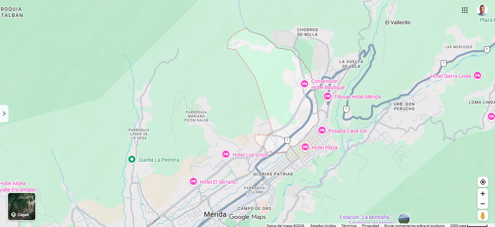

La PARROQUIA es una parte del municipio (más pequeña que el municipio). Vivimos en la Parroquia Spinetti Dini, dentro del Municipio Libertador.
1. ¿Qué nivel es una parroquia?
2. ¿El Teleférico Mukumbarí está en Spinetti Dini?
3. ¿Dónde están el Teleférico y la Plaza Las Heroínas?
4. Un hito de Spinetti Dini es…
5. ¿La parroquia es más pequeña que el municipio?
6. ¿Cuál es nuestra parroquia?
7. El hospital Sor Juana Inés es un…
8. Parroquia El Centro es donde está el…
9. Parroquias vecinas de Spinetti Dini:
10. La Facultad de Medicina (ULA) está en…
11. Una parroquia está dentro del…
12. Marca en el mapa un hito de Spinetti Dini. Módulo: ______
